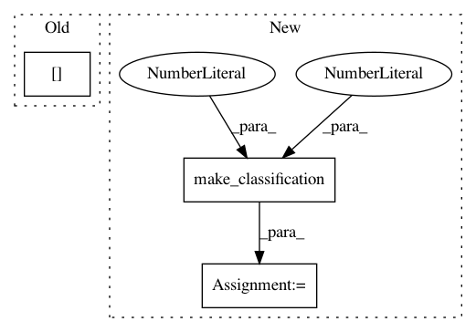

c765d1e7e8af81d5a09b53e592d768d7318c963a,lightning/tests/test_primal.py,,,#,15
Before Change
random_state = check_random_state(0)
perm = random_state.permutation(iris.target.size)
iris_dense = iris.data[perm]
iris_target = iris.target[perm]
iris_sparse = sp.csr_matrix(iris_dense)
gen_dense, gen_target = make_classification(n_samples=200, n_features=100,
random_state=0)
After Change
n_classes=2, random_state=0)
bin_sparse = sp.csr_matrix(bin_dense)
mult_dense, mult_target = make_classification(n_samples=300, n_features=100,
n_informative=5,
n_classes=3, random_state=0)
mult_sparse = sp.csr_matrix(mult_dense)
def test_primal_fit_binary():
In pattern: SUPERPATTERN
Frequency: 3
Non-data size: 3
Instances
Project Name: scikit-learn-contrib/lightning
Commit Name: c765d1e7e8af81d5a09b53e592d768d7318c963a
Time: 2012-01-12
Author: mathieu@mblondel.org
File Name: lightning/tests/test_primal.py
Class Name:
Method Name:
Project Name: fmfn/BayesianOptimization
Commit Name: 84a07345139c217c5f77479bd3a129f61a35af27
Time: 2014-12-14
Author: fmfnogueira@gmail.com
File Name: examples/sklearn_example.py
Class Name:
Method Name:
Project Name: scikit-optimize/scikit-optimize
Commit Name: 4012da339a3d1da75f885efbf58baa7666ee32a9
Time: 2018-06-11
Author: iaroslav.email@gmail.com
File Name: skopt/tests/test_searchcv.py
Class Name:
Method Name: test_search_cv_internal_parameter_types